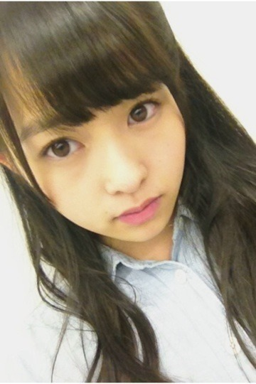

7thシングル選抜メンバーに
選ばれました。
私が伝えたいのは
自分の存在。
私はこうなんだ
口で言わなくてもわかるように。
今回、私が選ばれて
納得していない方が
たくさんいると思います。
もちろん、
私も今の自分に納得していません。
正直、連続で選ばれたのが
わかりませんでした。
でも、
選ばれて気持ちの整理はつきました。
チャンスをもらったんだから
ごちゃごちゃ考え込まず、
私らしくいようと思います。
みなさんに納得してもらえる
存在になれるように。
スキルアップだ！！
応援してくれるみなさん、
私を信じてください。
センターに選ばれた堀未央奈ちゃん。
私なりに、支えます。
頼られたら、ちゃんと
こたえられるように。
大丈夫。
一期生のみんながついてるから。
絶対大丈夫！
代々木ファイナルで
選抜発表された後、
舞台上でメンバー全員円陣しました。
一期生二期生が一つになれた気がして。
すごく嬉しかった。
全員で支えて合えたらいいな。
もっと良いグループになれたらいいな。
今後も乃木坂46を
よろしくお願いします！
7thシングル、
楽しみにしててください！

伊藤万理華